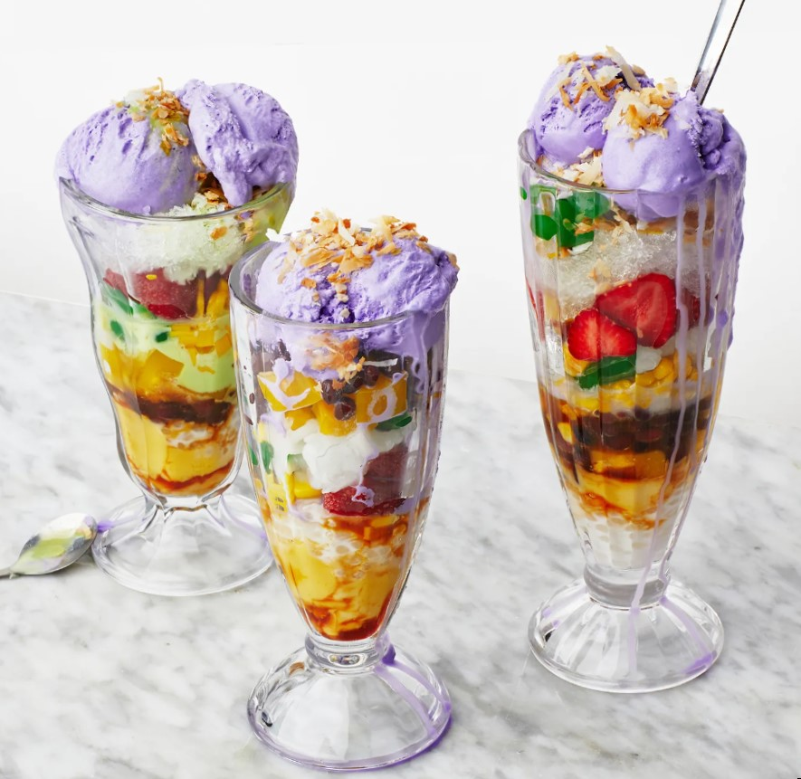

Halo-Halo Recipe
Ingredients
- 2 cup plus 2 Tbsp. sugar
- 4 large egg yolks
- cup plus 2 Tbsp. unsweetened coconut milk
- cup sweetened condensed milk
- 1 head garlic, peeled and minced
- ¼ tsp. vanilla extract
- 1 tsp. kosher salt

Instructions
-
Heat gelatin and ½ cup water in a small saucepan over medium heat, stirring constantly until gelatin is dissolved. Remove from heat and stir in mango purée.
-
Place a rack in middle of oven; preheat to 350°.
-
Whisk egg yolks, coconut milk, condensed milk, vanilla, and salt in a medium bowl to combine.
-
Bake flan until just set in the center (it should still wobble a little when gently jiggled) and barely golden on top, 55–60 minutes.
-
Meanwhile, bring sago pearls and ½ cup water to a simmer in a small saucepan and cook until translucent and firm-tender, 8–10 minutes. Spread out corn on a rimmed baking sheet.
-
Toast coconut in a small skillet over medium heat until edges start to brown and crisp, about 5 minutes (be careful not to overcook).
-
Cut flan into 1"pieces and divide some among tall glasses or wide bowls.
Visit Bon Appetit for more recipes